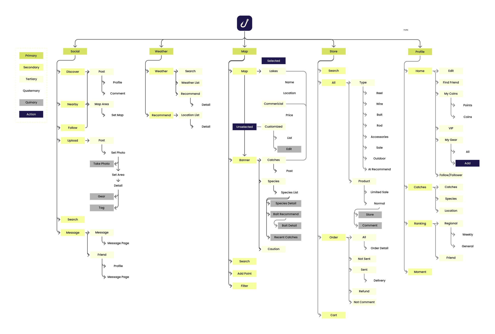

Context
With recreational fishing projected to reach hundreds of millions of participants worldwide, the need for a trusted, intelligent companion has never been greater. While I have developed a fishing app that helps digitalize the market for younger users, it still lacks a natural flow to guide people before, during, and after their fishing events. Anglers everywhere face fragmented access to knowledge, varying local regulations, and steep skill gaps, creating demand for a seamless, intelligent solution.
Project Questions
Multi-sensor
Communication
Physicalization
Play
HMW create a natural, seamless flow that guides users before, during, and after fishing trips?
State of Knowledge of the field
Carrie Wang
Design & User ExperienceMobile/Web UIUX
Expert
AI/ML Concepts
Intermediate
Product Management
Intermediate
Hardware interaction
Beginner
Sissi Zheng
Technical & ResearchSoftware/Hardware interaction
Expert
Voice AI interaction
Expert
LLM
Intermediate
Ideation 2 Context
Matrix

Map of Community of Practice
Software
Platforms & ServicesLakeMonster
An app that analyzes data points — including satellite imagery, weather patterns, water depth data, and historical fishing records to generate fish activity forecasts, hotspot maps, and water clarity maps.
Fishbuddy
Smart decisions: uses 10+ weather factors (temp, pressure, humidity) to flag prime times, recommend bait, and navigate nearby spots. Social: in-app forum to share catches and techniques.
墨迹天气
Expert-verified with hi-res satellite and depth maps. AR+AI logging: snap a fish to auto-record species, size/weight, location, and weather. AR contests: create/join casual challenges with live leaderboards.
Hardware
Devices & InterfacesSea.ai
Smart camera: combines optical and infrared sensors, utilizes AI and ML algorithms to detect objects on the water surface.
Chasing F1 Pro
Remote/autonomous lateral movement, station-hold, multi-spot waypoints. Depth & temperature sensors; Wi-Fi streams live video + depth/temp to the app. Bait-boat mount with one-tap in-app bait release.

Research Methods
- Market research – analyzing fishing industry trends, competitors, and emerging technologies in global market
- Questionnaires/Surveys – collecting quantitative insights on user behaviors, needs, and expectations.
- Interviews – focusing on 3 types of users (e.g., novice anglers and experienced anglers) to gather qualitative perspectives.
- Feedback on current app – capturing structured feedback from team members and early adopters.
- AI tools/model research – how agent AI are used today and how to fine-tune a fishing model
Proposed Workflow
Old Workflow

Proposed Workflow
Pre-Fishing
Preparation & PlanningInputs
- User profile (experience level, preferences)
- Time availability
- Location access
- Weather data
- Regulations
Agent Actions
- Collect user goals (“I want to fish this weekend for 3 hours.”)
- Analyze external data (weather, water level, seasonality)
- Recommend optimal time & location for fishing
- Suggest equipment & bait (with purchase/rental links)
- Provide a step-by-step preparation checklist
During Fishing
Real-Time Guidance & SupportInputs
- GPS location
- Live conditions (weather/water APIs)
- Manual user updates
Agent Actions
- Provide real-time tips (e.g., adjust bait, change spot)
- Offer safety alerts for sudden weather/water risks
- Enable quick-reference tutorials (casting, knot tying)
- Track catches & efforts automatically (photo or manual logging)
- Offer motivational nudges if no fish caught after a while
Post-Fishing
Reflection & EngagementInputs
- Catch log
- Effort data
- Social sharing intent
Agent Actions
- Summarize trip results (e.g., effort vs. outcome)
- Suggest improvements for next time (learning loop)
- Provide AI-generated trip journal (story + photos)
- Enable social sharing (successes & learnings)
- Offer gamification: badges, streaks, community challenges